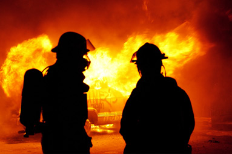

GREEDY? HARDLY.
DON'T LET POLITICIANS GUT FIRE FIGHTERS' RETIREMENTS
Arizona's fire fighters risk their lives and bodies to protect us. They have lower life expectancies than we do. Upon retirement, they pay sky-high rates for health insurance. And they don't draw Social Security.
Fire fighters and public safety retirees rely heavily on the middle-class pensions they were promised when they were hired. Unfortunately, some politicians in the Arizona Legislature want to gut these benefits. They've accused fire fighters and police officers of being greedy. The politicians say fire and police are getting rich by robbing taxpayers. That they're pigs at the trough.
Tell that to fire retirees from Gila River, where pensions average $23,959 yearly.
Tell it to fire retirees from Pinetop, whose pensions average $25,263 per year.
Tell it to fire retirees from Clifton, whose pensions average $28,000 per year.
Imagine living off that pension while paying for health insurance that can cost a family upwards of $20,000 each year?
If the legislators get their way, these retirees will lose the cost of living allowances they depend on to keep their families above water. And the average Arizona fire fighter - who's likely already been hit with pay cuts and furlough days - will soon see another yearly pay cut of about $1,600.
Fire fighters rescue us when we dial 911. The question is, who will rescue them?
Don't let the politicians get away with attacking on our heroes. Get involved. Call or email your legislator today. Click here and let them know what you think: That our heroes deserve what they were promised, not a broken pension and a retirement stuck in poverty.